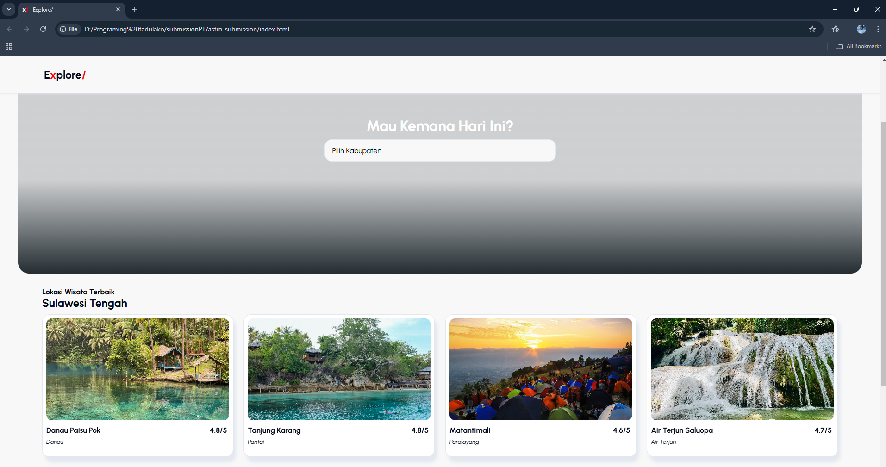

Project 1
Final Project Programing Tadulako
Saya Aulia Fitri Hanifah Nim F55123068
Saya Mahasiswi semester 3 di Fakultas Teknik, Prodi Teknik Informatika, Universitas Tadulako, Kota Palu.Saya lulus dari SMA MBS YOGYAKARTA pada tahun 2023. Alasan saya mengambil program studi ini karen melihat peluang kerjanya yang sangan besar.
Final Project Programing Tadulako
Tugas Pertemuan 9, Programing Tadulako